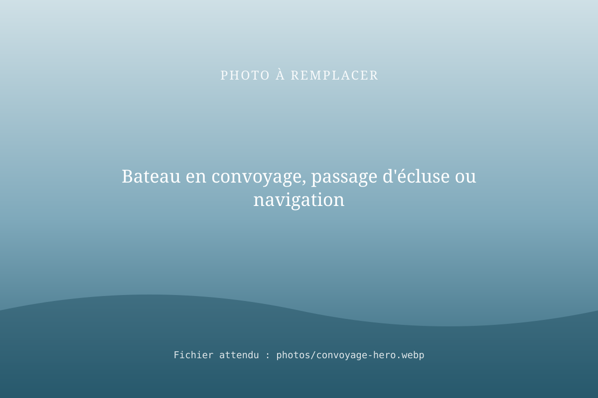
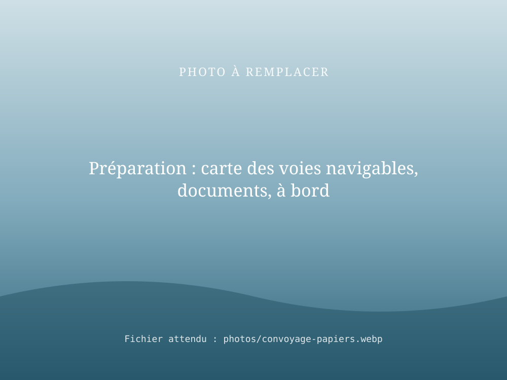

Convoyage de bateau vers les chantiers, démarches comprises
RivesEnRêves organise le convoyage de votre bateau jusqu'au chantier de réparation ou d'entretien, et prend en charge toute la partie administrative. Vous nous confiez le bateau et ses papiers ; nous gérons les autorisations, la navigation et la remise au chantier.

Le déroulé, étape par étape
Un convoyage réussi, c'est 20 % de navigation et 80 % de préparation. Nous nous occupons des deux.
- Demande
Vous décrivez le bateau, son emplacement, le chantier de destination et vos délais.
- Devis
Nous étudions l'itinéraire et vous remettons un devis clair, démarches incluses.
- Autorisations et démarches
Vérification des documents, assurance, droits de navigation, avis à la batellerie, rendez-vous chantier.
- Convoyage
Navigation jusqu'au chantier, en toute sécurité, avec un point d'étape à chaque moment clé.
- Remise du bateau
Le bateau est remis au chantier ; vous recevez la confirmation et les documents.
La partie administrative, c'est notre affaire
Pour un propriétaire, le plus pénible n'est souvent pas la navigation mais la paperasse et la coordination. Nous prenons en charge :
- la vérification des documents du bateau et de l'assurance pour le trajet ;
- les droits de navigation sur les voies empruntées et le suivi des avis à la batellerie (fermetures, chômages, travaux) ;
- les échanges avec les gestionnaires de voies navigables et de ports ;
- la coordination avec le chantier : date d'arrivée, mise à sec, réception du bateau.
Lire notre guide : organiser le convoyage d'un bateau vers un chantier

4 haltes fluviales exploitées sur la Marne de 2019 à 2025, dont 2 à La Ferté-sous-Jouarre.
Convoyages, renflouement aux ballons de flottaison, découpe de bateaux : nous connaissons les bateaux en situation réelle.
Questions fréquentes
Combien coûte le convoyage d'un bateau vers un chantier ?
Le prix dépend de la distance, du type de bateau, du nombre d'écluses et des démarches à mener. RivesEnRêves établit un devis détaillé après un premier échange : il comprend la partie administrative.
Quelles démarches administratives faut-il prévoir pour convoyer un bateau ?
Il faut notamment vérifier les titres et documents du bateau, l'assurance, le droit de naviguer sur les voies empruntées, les avis à la batellerie (fermetures, travaux) et coordonner l'arrivée avec le chantier. RivesEnRêves prend en charge toute cette partie administrative.
Mon bateau ne peut pas naviguer seul, pouvez-vous le convoyer ?
C'est possible dans certains cas, par remorquage ou poussage. Décrivez l'état du bateau dans votre demande : nous étudions la solution la plus sûre.
Dois-je être présent pendant le convoyage ?
Non, ce n'est pas obligatoire. Vous nous remettez le bateau et ses papiers au départ, nous vous tenons informé et le remettons au chantier.
Où doit aller votre bateau ?
Indiquez le type de bateau, le point de départ et le chantier de destination : nous vous envoyons un devis.